Customized Nametag
Working with PrusaSlicer and the Prusa MINI+ helped me better understand how CAM decisions directly affect print results. At first, I struggled to find the correct slicer settings and later realized the software was in beginner mode, which hid important parameters and limited my ability to fine-tune prints. Once I switched modes, I learned how important it is to complete the entire CAM workflow, especially re-slicing and exporting updated files so the printer receives the correct instructions. I also had to adjust to the MINI+’s physical interface, including loading filament and navigating the controls. During my nametag print, I observed stringing and small gaps, which were likely caused by temperature or retraction settings that still needed adjustment. These issues showed me that slicer configuration, file preparation, and machine behavior are closely connected. This experience reinforced the value of testing, making small changes, and iterating rather than expecting perfect results on the first try.
 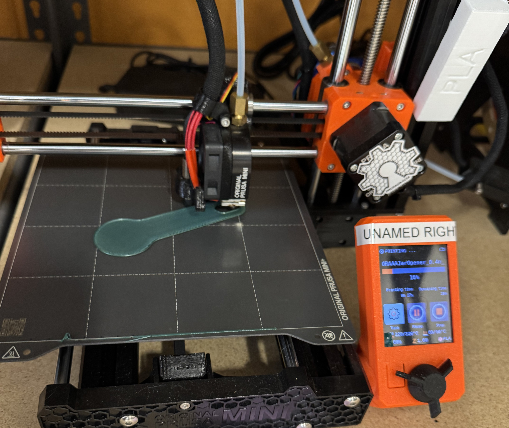
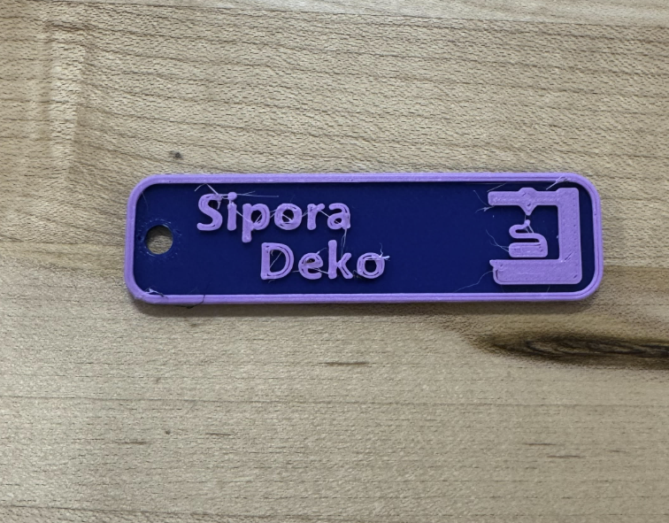
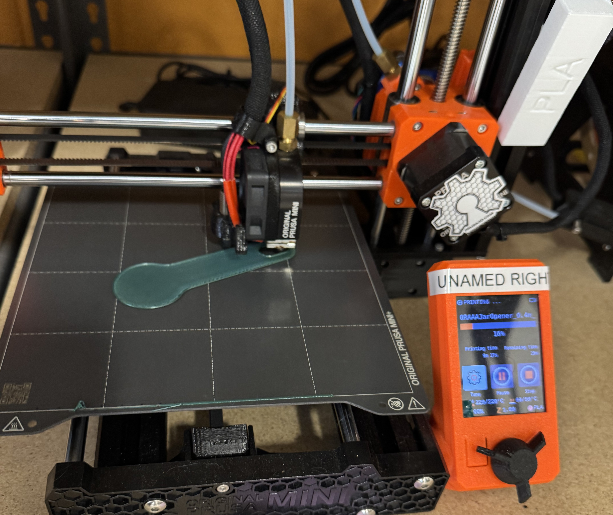
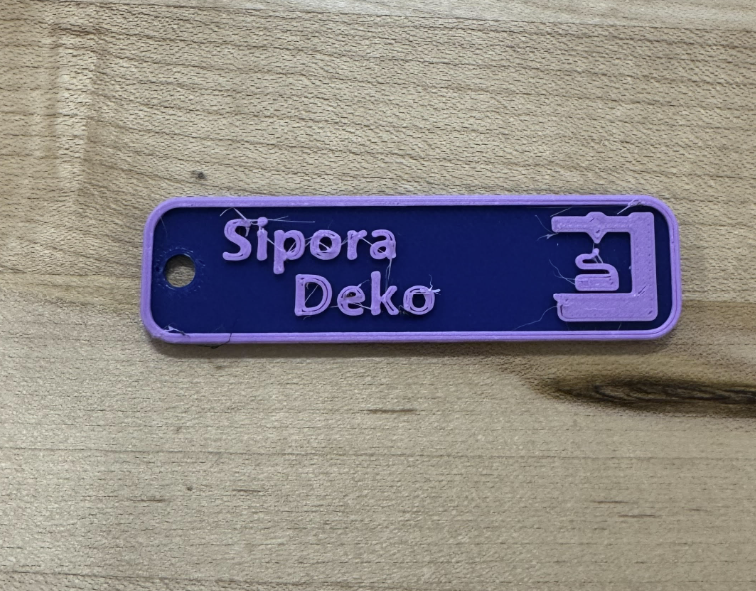
A Calibration "Torture Test"
I wanted to test how far I could push the Prusa MINI+ and PrusaSlicer by printing a challenging “torture test” model. I chose a large helix because its spiral geometry would reveal how well the printer handles overhangs and continuous curves. Since the print was estimated to take about three hours, I paid close attention to my setup and slicing choices. While preparing the file, I rotated the helix upright but forgot to ensure it was flat on the build plate. That small oversight carried through the CAM process and caused issues that were not obvious until after slicing and loading the file. Troubleshooting helped me realize the problem came from model orientation rather than filament type or printer hardware. Once I aligned the helix correctly and re-sliced the file, the print ran as expected. The final result showed a mostly successful shape, but the bottom surface was slightly uneven and there was some stringing between open gaps. These defects were likely caused by imperfect bed contact and filament oozing during travel moves. This experience reinforced that improving print quality depends on carefully checking orientation, retraction, and temperature settings in the slicer and iterating on them, rather than assuming the printer itself is at fault.
 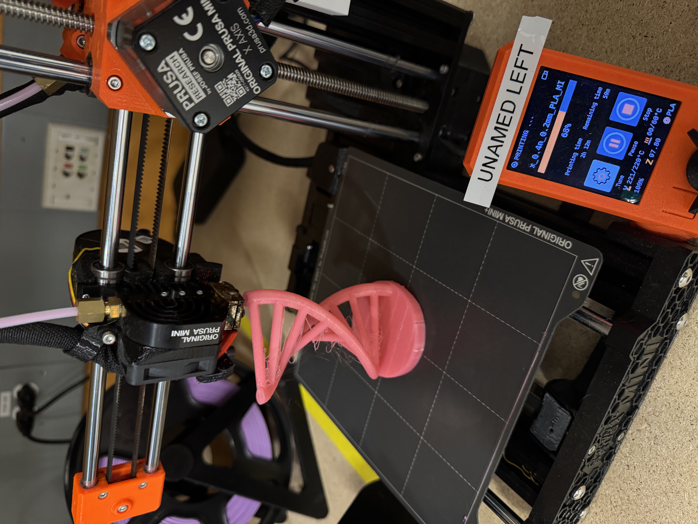
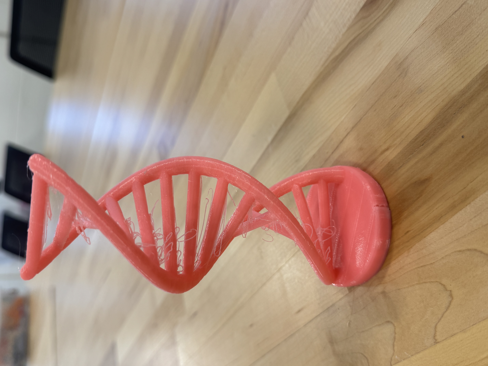
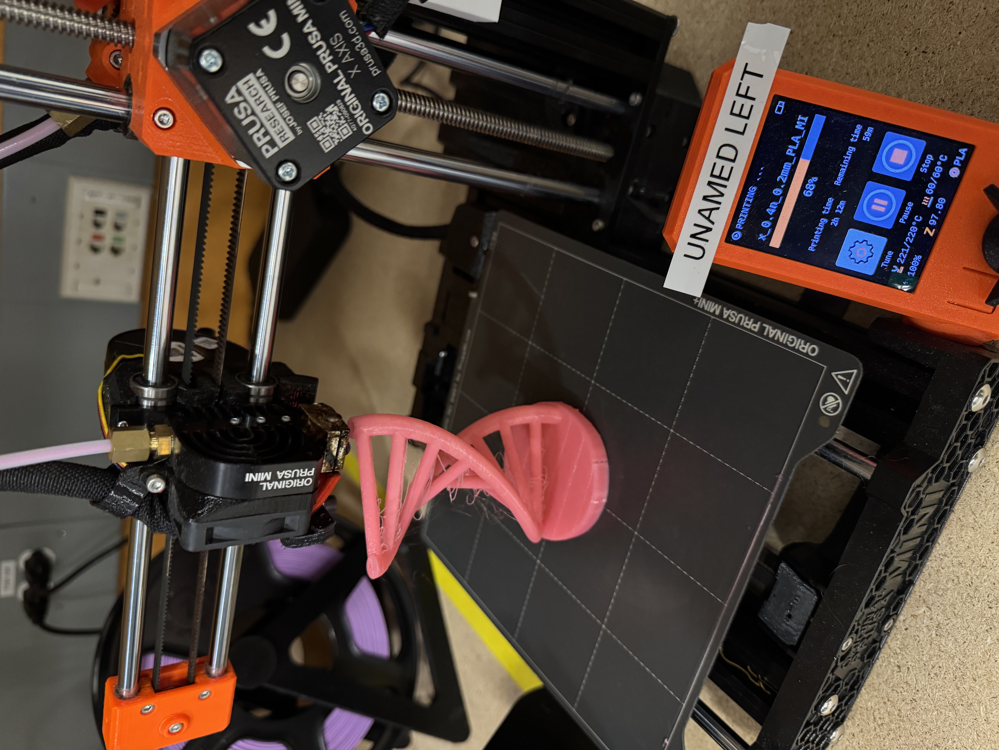
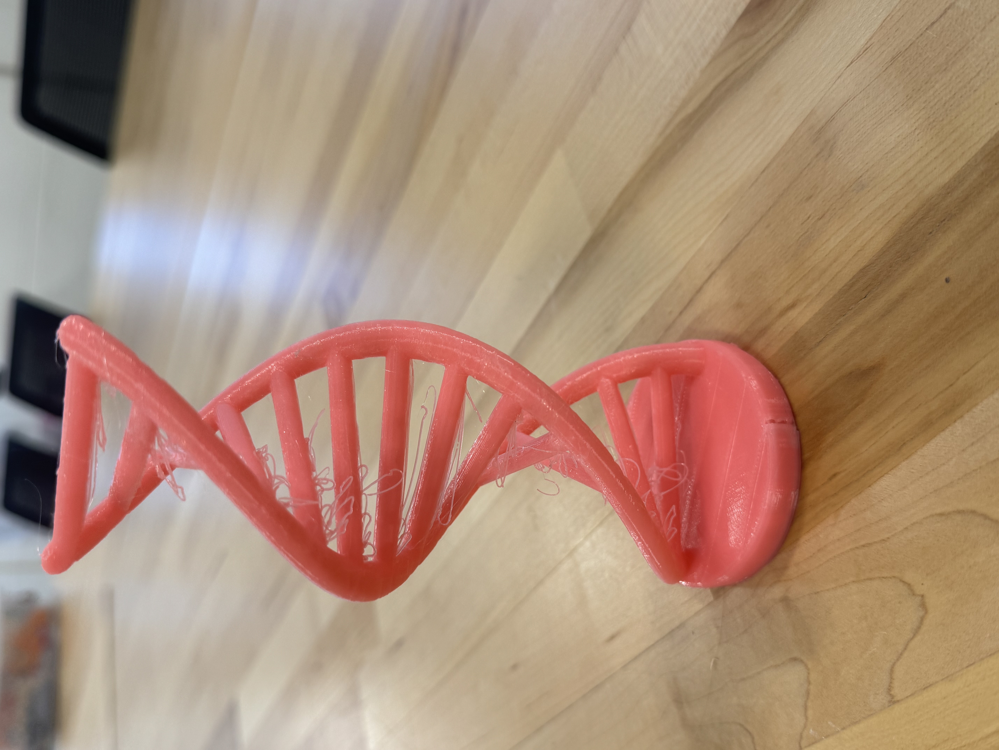
Open Source Assistive Device
For this design, I chose an open-source assistive device that I could realistically use in my daily life: a jar opener. Small inconveniences like tight jar lids are easy to overlook until they become frustrating or even dangerous. People often resort to using knives or other utensils to pry lids open, which increases the risk of injury and wastes time and effort. The design and print process took about an hour and a half. I imported the file, oriented the jar opener flat on the build plate, transferred it to a USB drive, and started the print without any major issues. The filament loaded smoothly, and the base printed cleanly with no gaps, which indicated that the filament diameter was set correctly. After the print finished, I noticed excess filament on the hook that slides under the jar lid, causing it to form a small blob instead of a sharp edge. This defect was likely caused by overheating, possibly because the printer had previously been set to a higher extrusion temperature. Despite this flaw, I tested the jar opener on a Pringles container, and it worked successfully, even breaking the plastic seal. Because the design uses a thick amount of filament, the tool feels strong and resistant to snapping, which supports its purpose as a safer alternative to using sharp tools.
 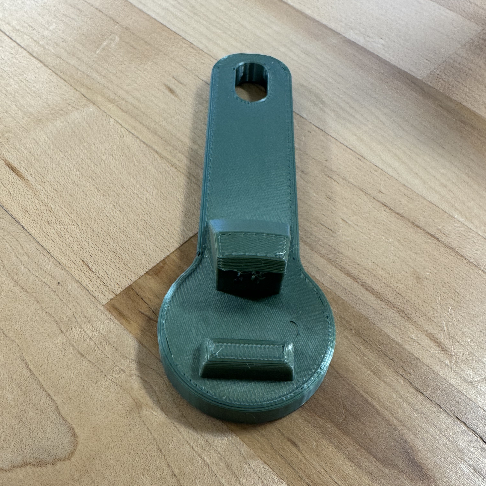
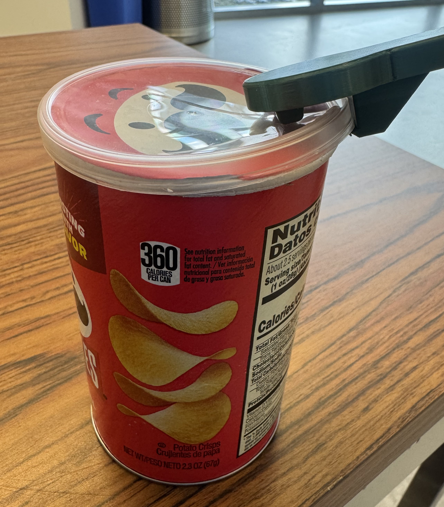
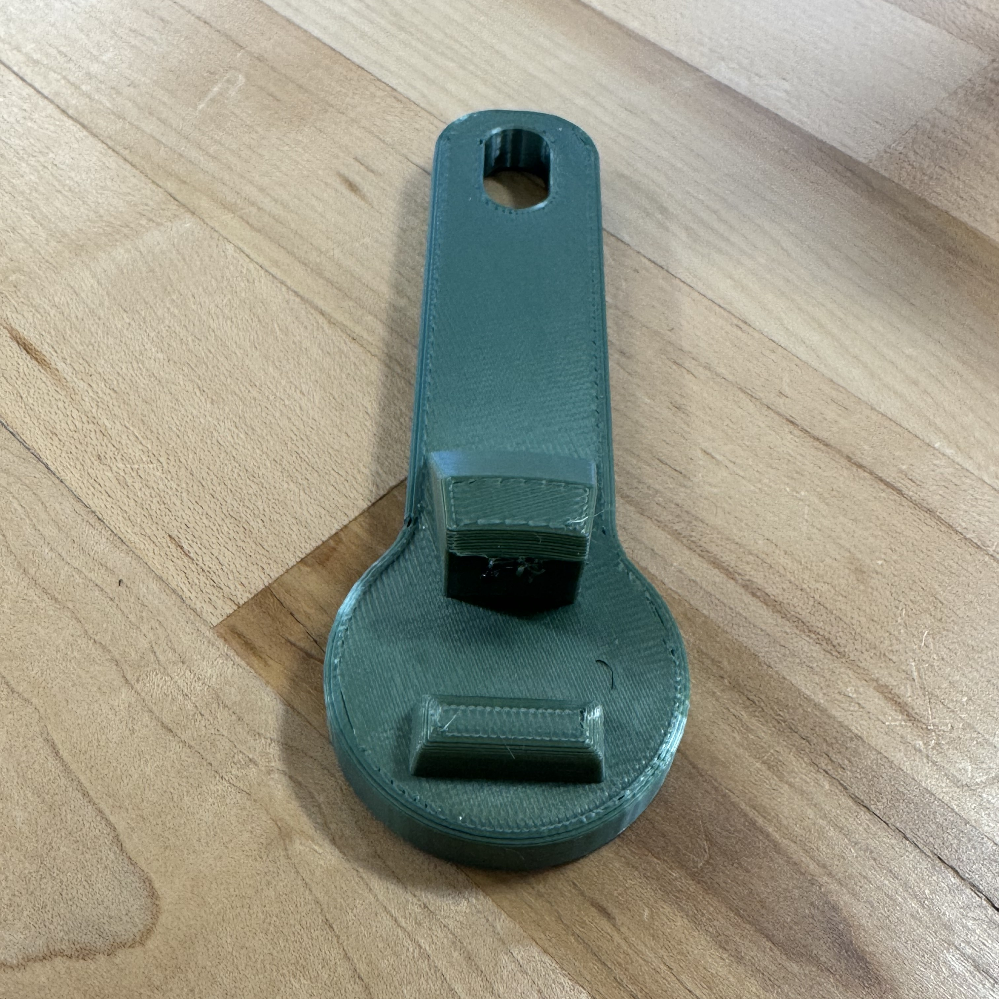
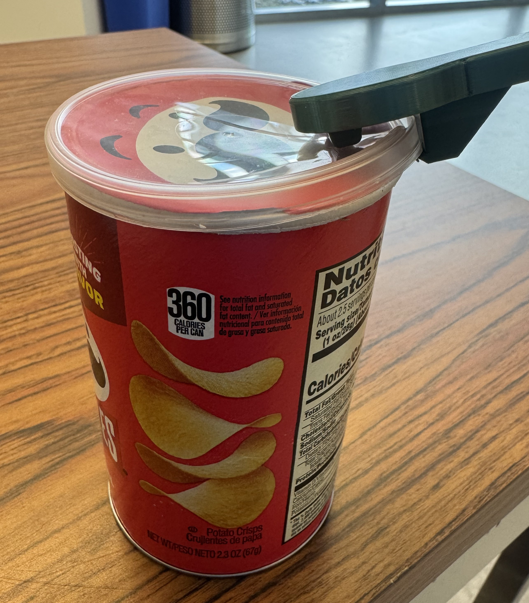
Website Design Process
Building this website was also a major component of this design project, and arguably the most challenging part for me. I used a Bootstrap template along with Sublime Text to code the site, which required me to learn many new skills along the way. Although the process was difficult at times, it ultimately became a very rewarding experience. I especially enjoyed having full creative freedom, which allowed me to experiment, problem-solve, and see my ideas come to life.